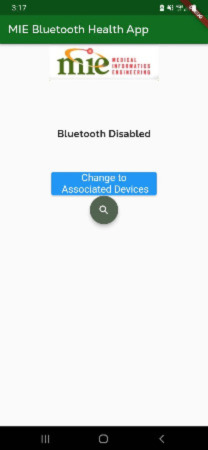
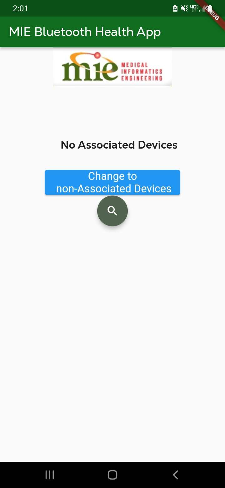
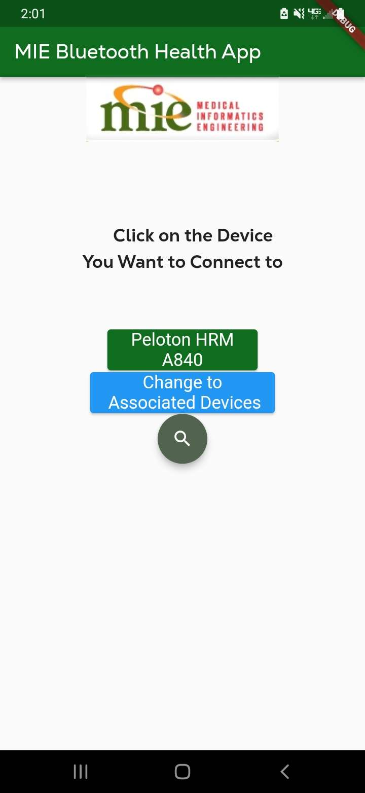
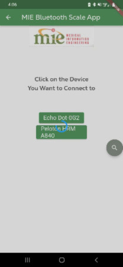
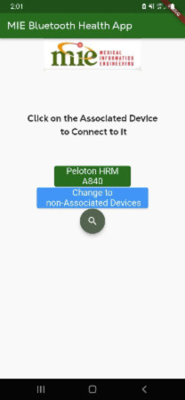
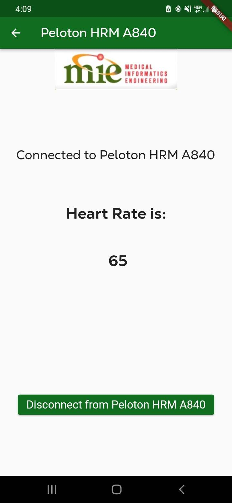

MIE Bluetooth Health App
A flutter app for Medical Informatics Engineering (MIE).
About
This app is for connecting bluetooth scales and blood pressure tests. The app will have a button to connect to the bluetooth device and you have to specify whether the device is a bluetooth scale or a bluetooth blood pressure monitor. then once the device is connected it should show the realtime weight or heart rate on the phone.
Author
This App was created by Dominic Oaldon with help from Doug Horner.
Notes
Screenshots
Device Select page
    
Connected to Device Page
